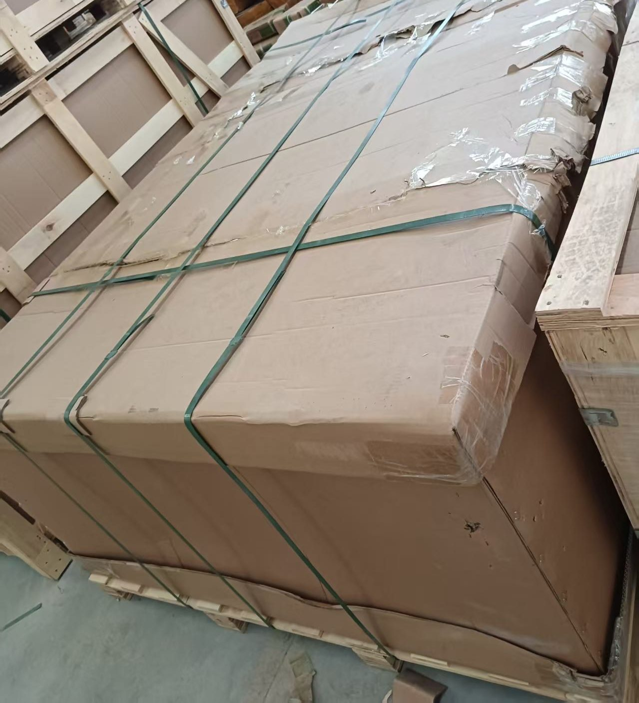

MACH
机械设备卡车发伊朗
机械设备走公路发伊朗。从义乌、深圳、广州集货，经乌恰或霍尔果斯口岸以 TIR 密封挂车出境。乌恰线直达车中途仅在布哈拉换装一次，目前 21–23 天抵德黑兰西关（Gomrok Gharb）海关保税库；天数自乌恰口岸起算，国内集货仓至乌恰一段通常 7 天内（估算值，按批次核算），两段分别计算。仓到关，不是到门，不是海运。
- 目前 21–23 天，自乌恰口岸至德黑兰西关海关保税库（直达车；换装车 26–30 天）；国内集货仓至乌恰一段通常 7 天内，另行计算
- 仓到关 · CPT / DAP · 由收货人清关行在海关清关缴税提货
- 乌恰线：新疆 — 吉尔吉斯斯坦 — 乌兹别克斯坦 — 土库曼斯坦 — 萨拉赫斯 — 德黑兰
- 单车装载上限 96 立方米且 25 吨，超限部分另议
路线
国内集货仓 → 乌恰口岸报关施封（TIR 关锁 + 电子封签） → 吉尔吉斯斯坦、乌兹别克斯坦、土库曼斯坦一票 TIR 过境 → 萨拉赫斯入境 → 德黑兰西关保税库，出具海关入库单（Ghabz-e Anbar）交清关行。直达车中途仅在布哈拉换装一次；换装车在奥什和布哈拉各换装一次，运费更低但天数更长。TIR 只减少开箱与换装次数，并非全程不换装，也不改变时效和运价。乌恰线过境吉尔吉斯斯坦，按 cargo invoice 货值加收 0.4% 过境税——是税不是运费，报价不含，客户另付。霍尔果斯线改走哈萨克斯坦，一律不涉及 0.4%，时效请询价。吐尔尕特、阿拉山口目前不做。
品名与装法
注塑机、数控机床、油压机、工程机械。超宽超高件走 17.5 米低平板 / 凹梁车,提供钢丝捆扎、重心锁止与配重方案。带液压油、蓄电池的机器按危包处理。发运前给尺寸重量图和吊点。单车装载上限 96 立方米且 25 吨；超限部分不含在报价内，另行计价，吊装、加固与捆扎亦另计。
网上不挂运价。要报价发三样:始发仓;目的海关(德黑兰西关 / 阿普林 / 马什哈德);货物数据——HS 编码、总重 KG、体积 CBM。

常见问答
从乌恰口岸到德黑兰海关要多少天？
时效自乌恰口岸起算：直达车目前 21 至 23 个自然日抵德黑兰西关海关保税库，换装车 26 至 30 天；到马什哈德直达 18 至 21 天，换装 24 至 28 天。国内集货仓（义乌 / 深圳）至乌恰口岸一段通常 7 天内，不含在上述天数内，两段分别计算。霍尔果斯线时效请询价。以上为当前实际运行区间，随口岸通关情况浮动，非承诺时效。
做门到门吗?
不做。交付到德黑兰海关保税库;缴税、清关、境内提货由收货人的持牌清关行办。
超限大件怎么装?
超宽超高件走 17.5 米低平板 / 凹梁车,提供钢丝捆扎、重心锁止与配重方案。带液压油或蓄电池的机器按危包处理。发运前给尺寸重量图和吊点。单车装载上限 96 立方米且 25 吨；超限部分不含在报价内，另行计价，吊装、加固与捆扎亦另计。
拼箱最低多少起?
1 立方米(CBM)或 100 公斤,义乌、深圳每周二、周五拼柜发德黑兰海关。